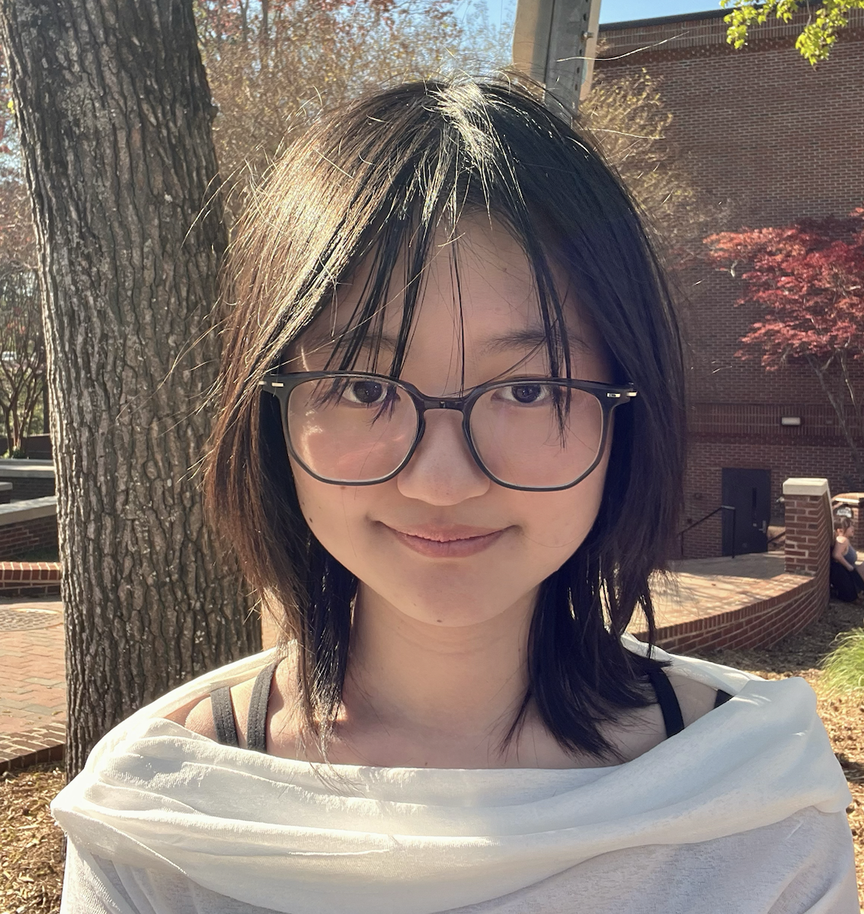
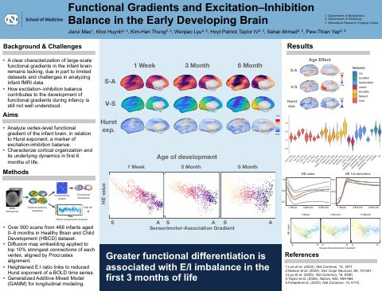
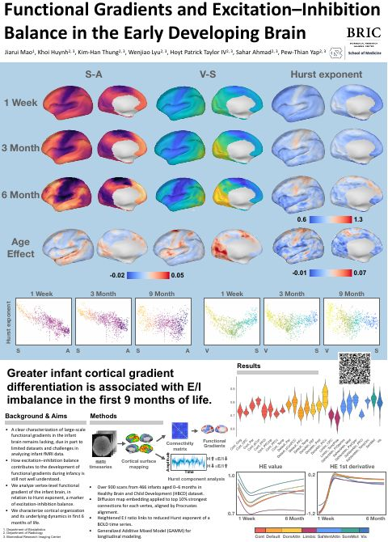
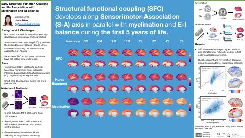
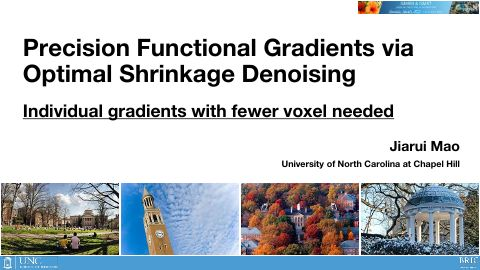

Ph.D. Student in Computer Science · UNC Chapel Hill
Jiarui Mao
Mapping how the brain’s structure and function develop.|
I study brain development. My work combines EEG, fMRI, and diffusion MRI with cortical surface methods to understand how the brain's structure and function emerge and mature, especially in infancy, including structure–function coupling, functional gradients, and excitation–inhibition balance. I build computational pipelines for large-scale neuroimaging data, from denoising and preprocessing to surface-based analysis and visualization.
CV Highlights
- Sep 2026 - Present Ph.D. student in Computer Science (first year).
- May 2026 B.S. in Biostatistics with a minor in Neuroscience at UNC-Chapel Hill.
- 2025 Office of Undergraduate Research (OUR) Travel Award: travel scholarship to present undergraduate research at a national conference.
- 2025 Kimball King Undergraduate Research Award: scholarship supporting senior honors thesis research.
- 2025 International Society for Magnetic Resonance in Medicine (ISMRM) Travel Award: scholarship and membership to present research at the annual meeting.
- 2025 Society for Neuroscience (SfN) Member, sponsored by Dr. Pew-Thian Yap's Lab, Department of Radiology, UNC-Chapel Hill.
- 2022 - 2025 Dean's List: top 20% of undergraduates at UNC-Chapel Hill (minimum 3.50 GPA).
- Mar 2023 - May 2026 Founder and President, International Neuroscience and Psychology Scholars Club (40+ members; workshops and mentorship programs).
- May 2023 - Present Angelcare Breast Cancer Volunteer Group: authored and edited patient-care content and supported major outreach events.
- 2023 - 2024 Academic Coach, UNC Learning Center: delivered 50+ tutoring sessions on quantitative coursework and study strategies.
- Nov 2024 - Present Research Assistant, YAP Lab (UNC Radiology): worked on optimal shrinkage denoising in high-resolution diffusion MRI.
- Jan 2024 - May 2024 Hopfinger Lab (UNC): EEG/ERP data collection and analysis for attentional suppression under unpredictable distractors.
- Jun 2023 - Aug 2023 Pasteur Institute: immunology research on RIPK1 and T-cell homeostasis using flow cytometry and molecular assays.
Presentations & Talks
Functional Gradients and Excitation–Inhibition Balance in the Early Developing Brain PDF
Oral Department of Biostatistics · UNC-Chapel Hill · May 8, 2026

Functional Gradients and Excitation–Inhibition Balance in the Early Developing Brain PDF
Poster OHBM Annual Meeting · 2026

Early Structure-Function Coupling and Its Association with Myelination and E-I Balance PDF
Poster Society for Neuroscience (SfN) · 2025

Precision Functional Gradients via Optimal Shrinkage Denoising PDF
Poster ISMRM Annual Meeting · 2025

2-Br-LSD Treatment of Mood and Depressive Disorders PDF
Poster Annual Celebration of Undergraduate Research · Chapel Hill, NC, United States · April 2024
Lowering thermal noise in functional MRI with optimal shrinkage denoising PDF
Poster 2024 Radiology Departmental Research Symposium · Chapel Hill, NC, United States